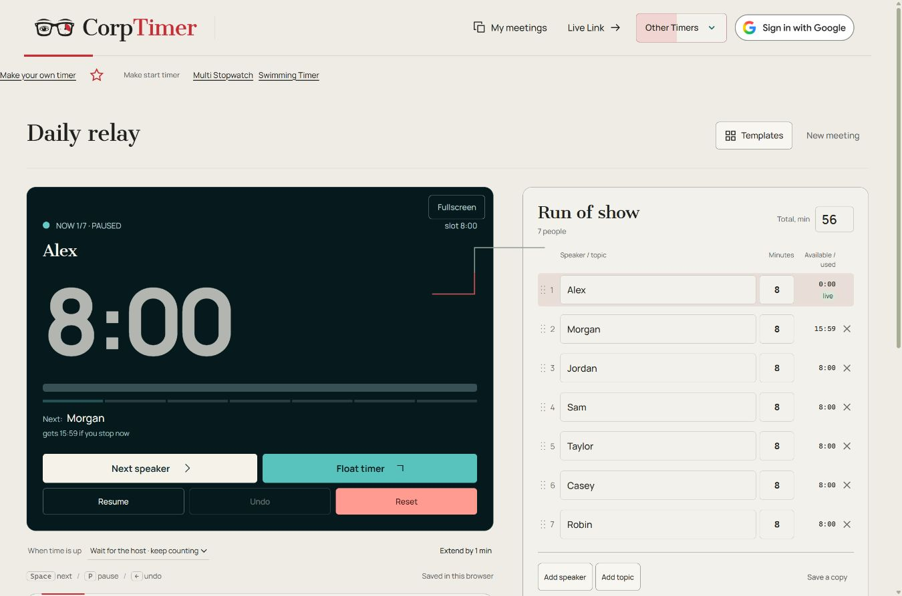

Meeting Timer
Meeting timeline
0:00 / 56:00Meeting complete
Run of show
Timing & floating settings
For later
Park the tangent. Keep the conversation moving.
Private to your meeting library. Never on the live screen.
Finish early. Pass the time forward.
How it works and advice
Step by step: Meeting Timer
- Open Templates and choose a standup, planning session, retrospective or workshop. You can also create a template from scratch.
- Name your agenda slots and enter their durations. Use Equal times to share time among unfinished slots.
- Press Start meeting, then Next speaker to hand over. Pause holds the meeting clock. The timeline shows the plan and current progress.
- Use Live Link for an audience view, Float timer for a compact window, or Fullscreen for a room display.
- Save the plan in your meeting library. Google sign-in synchronizes your saved meetings and templates.

When to use this timer
- Daily standups: give each teammate a short update slot and reserve time for blockers.
- Sprint planning: separate the sprint goal, work selection and delivery discussion.
- Retrospectives: time reflection, voting, discussion and concrete follow-up actions.
How the Meeting Timer works
The CorpTimer Meeting Timer turns an agenda into a shared schedule. Add speakers, discussion topics or both, give each slot a duration and choose the total meeting length. Start with a template for a standup, retrospective, planning session or workshop, or build your own agenda.
Slots end at milestones measured from the meeting start. If an 8-minute turn ends after 7 minutes, the next speaker gets that spare minute. An overrun uses time from later slots. Use Next speaker to hand over, Pause to stop the meeting clock and Undo to reverse the last switch. You can wait for the host at zero or enable automatic transitions.
Float timer opens a compact display where the browser supports it. Live Link creates an audience link; keep the host tab open. Notes and reports remain private. Meetings are saved in this browser, with optional Google sign-in for a synchronized meeting library.
Advice for using the Meeting Timer
- Name agenda slots after the decision or topic, so everyone can see what the current time is for.
- Reserve a closing slot for decisions and next actions before dividing time between speakers.
- Pin slots that need a fixed allocation; use Equal times when unfinished speakers and topics should share the remaining time equally.
- Test the floating display in your actual screen-sharing mode. A floating window is not necessarily visible to the audience.
- Put tangents in For later and export a session report when you need a record of planned and actual time.
Useful details
Can I use the meeting timer without an account?
Yes. Agenda editing, timing, templates and local saving work without signing in. Google sign-in is optional for syncing your private meeting library across devices.
Will this timer work if I close the page?
Keep the timer tab open. Browsers can suspend background tabs, especially on phones. Elapsed time is recalculated when the page resumes, but an alarm at the exact deadline cannot be guaranteed. Reloaded interval, stopwatch and chess sessions return paused; the New Year countdown follows its selected date and time zone.